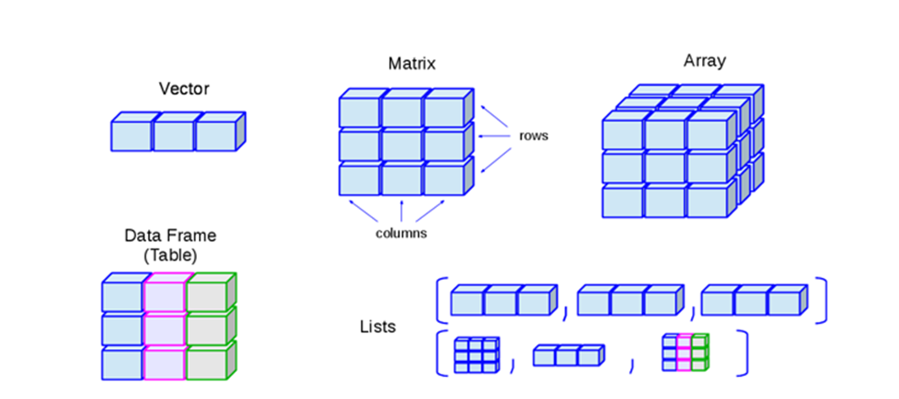

2>3[1] FALSEТип данных (встречается также термин «вид данных») — фундаментальное понятие теории программирования.
Тип данных определяет множество значений, набор операций, которые можно применять к таким значениям и способ реализации хранения значений и выполнения операций. Любые данные, которыми оперируют программы, относятся к определённым типам.
R может хранить и обрабатывать различные виды информации и типы данных:

2>3[1] FALSEМы можем присваивать логические значения в качестве значений переменных, используя полный или краткий вариант:
a<-TRUE
b<-FALSE
#Или
a<-T
b<-FС логическим типом могут происходить интересные вещи, в частности, этот тип может рассматриваться как число. В таком случае TRUE принимается за 1, а FALSE как 0.
И если мы будем производить манипуляции над логическими значениями, в результате у нас будут числа!
Например:
TRUE + TRUE # TRUE считается как 1[1] 2FALSE * 7 # FALSE принимается за 0[1] 0Или, вот еще интересный пример:
(2 < 3) + (1 == 2) # Что тут вообще происходит?[1] 1Почему получился именно такой результат?
2 < 3 - TRUE, то есть 1
1 == 2 - FALSE, то есть 0
TRUE+FALSE=1+0=1
is.numeric(-5.6)[1] TRUEa <- -11
b <- 13.37
c <- 1/137
class(a)[1] "numeric"class(b)[1] "numeric"class(c)[1] "numeric"С числовыми переменными мы можем совершать различные математические операции:
a <- -11
b <- 13.37
c <- 1/137
print(a+b*c)[1] -10.90241print(a^2+sqrt(b)-c/5)[1] 124.655x <- pi * 23.5
class(x)[1] "numeric"#Проверим, является ли x целым числом
is.integer(x)[1] FALSE#Создадим переменную y
y<-25L #при вводе, для того, чтобы R понял, что число именно целое, добавляется буква L
#Проверим, является ли y целым числом
is.integer(y)[1] TRUE#Проверим, является ли y числовой переменной
is.numeric(y)[1] TRUEz <- 1:2 + 1i*(8:9)
str(z) cplx [1:2] 1+8i 2+9icolor<-"Red"
class(color)[1] "character"is.character(color)[1] TRUEВозможные варианты написания:
d <- "Hello" # С помощью двойных кавычек
e <- 'how are you?' # С помощью одинарных кавычек
d[1] "Hello"e[1] "how are you?"Однако, нельзя использовать и те, и другие сразу, будет ошибка:
f <- "Так работать не будет' Иногда вместо текста нет ничего, но это все равно будет строковая переменная (пустая строка):
h <- "" # Это пустая строка!С числовыми переменными мы можем совершать различные операции, что же делать со строковыми переменными? К ним тоже можно применять разные функции, и их довольно много. Вот некоторые:
Посчитаем количество символов в строке:
g<-"Как упоительны в России вечера!"
nchar(g)[1] 31Если нам нужен какой-то определенный фрагмент текста, мы можем его “вытащить” оттуда:
g<-"Как упоительны в России вечера!"
substr(g, 4, 25) [1] " упоительны в России в"Довольно часто при анализе текстовых данных их нужно разделить на отдельные кусочки:
g<-"Как упоительны в России вечера!"
strsplit(g, " ") [[1]]
[1] "Как" "упоительны" "в" "России" "вечера!" В данном случае мы использовали пробел в качестве разделителя.
x <- c("single","married","married","single")
class(x)[1] "character"factor () - функция, которая создает факторные переменные. Аргумент levels используется для обозначения уровней (порядка, если он нужен).
x <- factor(c("single", "married", "married", "single"), levels = c("single", "married", "divorced"))
class(x)[1] "factor"str(x)# функция str() дает больше информации о переменной, не только какого она типа, но сколько элементов содержит, какие в ней значения, уровни и т. д. Factor w/ 3 levels "single","married",..: 1 2 2 1as.factor() - данная функция превращает в факторный тип переменные другого типа, даже если они числовые.
colors<-c("red", "yellow", "green")
colors<-as.factor(colors)
str(colors) Factor w/ 3 levels "green","red",..: 2 3 1Пример порядковой переменной с уровнями:
status <- c("Poor", "Middle-class", "Rich")
status <- factor(status, ordered=TRUE) # ordered=TRUE - делает переменную не просто категориальной, но и порядковой
str(status) Ord.factor w/ 3 levels "Middle-class"<..: 2 1 3Получилось не совсем то, что нам нужно, так как программа автоматически отсортировывает по алфавиту. Чтобы поменять порядок, нужно задать уровни “принудительно”:
status <- c("Poor", "Middle-class", "Rich")
status <- factor(status, order=TRUE,levels=c("Poor", "Middle-class", "Rich"))
str(status) Ord.factor w/ 3 levels "Poor"<"Middle-class"<..: 1 2 31. К какому типу переменных относится число -3,5?
2. Какой результат получится, если попытаться превратить в число строковую переменную?
3. Какая функция используется для проверки принадлежности переменной к факторному типу?
4. Могут ли логические переменные быть представлены в числовом виде?
Структура данных — это способ организации информации для более эффективного использования. В программировании структурой обычно называют набор данных, связанных определённым образом.
Основные структуры данных в R это векторы, матрицы, массивы, списки и таблицы данных.
Рассмотрим их подробнее.

Вот пример того, как можно создать числовой вектор, содержащий числа от 1 до 10:
x<-1:10
x [1] 1 2 3 4 5 6 7 8 9 10А вот так - вектор с текстовыми элементами:
y<-c("Красный", "Синий", "Желтый")
y[1] "Красный" "Синий" "Желтый" Заметьте, чтобы создать вектор с наименованиями цветов, мы использовали функцию c(), в которой c является производной отcombine. В этом есть смысл, поскольку мы соединяем, как бы “комбинируем”, несколько числовых или текстовых объектов в один ряд.
Как назвать вектор (да и другие структуры данных) правильно? Есть несколько простых правил. Имя может содержать:
и обязательно должно начинаться с буквы или точки, но за точкой нельзя поставить цифру.
Так, например, имя “.2b” не является валидным, а “.b2” - вполне годится для именования.
Нельзя также использовать в именах зарезервированные слова,такие как if,else, repeat, while, function, for, in, next, break, TRUE, FALSE, NULL, Inf, NaN, NA, NA_integer_, NA_real_, NA_complex_, NA_character_ некоторых других, которые являются базовыми конструкциями языка и используются в качестве аргументов при вызове функций.
Например, если мы попробуем создать вот такой вектор, то программа выдаст ошибку:
break<-1:5Error in break <- 1:5: неправильная (NULL) левая сторона присваиванияДлину числового вектора можно определить с помощью функции length():
x<-1:3
length(x)[1] 3Функция class() помогает определить, какой тип данных хранится в векторе. Напомним, что вектор содержит данные одного типа.
x<-c(1:3)
class(x)[1] "integer"Еще примеры создания логических и текстовых векторов:
y <- c(TRUE, TRUE, FALSE, TRUE)
z <- c("to", "be", "or", "not", "to", "be")
class(y)[1] "logical"length(y)[1] 4class(z)[1] "character"length(z)[1] 6Если мы попытаемся соединить два вектора - числовой и строковый - то цифры “превратятся” в буквы, поскольку R автоматически переведет все элементы к наиболее подходящему общему типу данных. Поскольку слова в цифры превратить нельзя, то таким общим типом будет строковый.
x<-c(1:10)
y<-c("Красный", "Синий", "Желтый")
z<-c(x,y)
x [1] 1 2 3 4 5 6 7 8 9 10y[1] "Красный" "Синий" "Желтый" z [1] "1" "2" "3" "4" "5" "6" "7"
[8] "8" "9" "10" "Красный" "Синий" "Желтый" То, что произошло в коде выше, называется конверсией типов. Такая конверсия случается тогда, когда элементы вектора разные. Запомниим, что вектор всегда хранит данные только одного типа!
Задание. Попробуйте создать вектор, сочетающий числовые, строковые и логические значения:
А что будет, если мы соединим вместе логические и числовые?
x<-c(TRUE, 5, FALSE, 6)
x[1] 1 5 0 6Мы можем также создавать “пустые” вектора, обозначая только тип данных, и сколько элементов в них содержится.
Например:
empty <- numeric(10) # Создаем пустой числовой вектор с 10 элементами
print(empty) [1] 0 0 0 0 0 0 0 0 0 0Заметьте, что даже если мы не просили R внести какие-то значения, в числовом векторе всем элементам автоматически были присвоены нули - значение по умолчанию.
Вот таким образом можно создать пустые вектора других типов:
empty_int <- integer(45) # числовой вектор с 45 элементами
empty_cha <- character(2) # строковый вектор с 2 элементами
empty_log <- logical(1000) # логический вектор с 1000 элементамиPfПопробуйте в RStudio создать эти вектора и посмотреть их. Обратите внимание, какие значения по умолчанию присваиваются в логическом и строковом векторах!
После того, как вектор создан, как мы можем посмотреть или изменить его элементы. Это сделать достаточно просто:
Поменять элемент в векторе:
a <- c(1, 2, 3) # Создадим числовой вектор с 3 элементами
a[2] <- 4 # Изменим значение второго элемента на 4
a # Посмотрим, что получилось[1] 1 4 3Как вы уже догадались, чтобы обратиться к какому-то элементу вектора, нужно набрать его порядковый номер в квадратных скобках [ порядковыйномер ]:
a <- c(1, 2, 3) # Создадим числовой вектор с 3 элементами
a[3] # Попросим R вывести третий элемент[1] 3Как вы думаете, что будет если запустить следующий код? Каким будет результат?
vec <- c(4, 5, 6)
vec[3] == 6Догадались? Попробуйте теперь запустить этот код и проверить, правы вы или нет:
С векторами можно производить большое количество действий, которые позволяют те типы данных, которые в них содержатся.
Проще всего совершать арифметические действия:
a <- 3 # Создаем единичный числовой объект
a + 4 # Прибавляем к нему константу[1] 7Мы можем прибавить число не только к другому числу, но и ко всему вектору:
a <- c(1, 2, 3) # Создаем числовой вектор
a + 4 # Прибавляем к нему константу[1] 5 6 7Такой тип “поведения” программы называется поэлементным. То есть операция производится над каждым элементом по отдельности.
Еще примеры:
a <- c(1, 2, 3)
a - 3 [1] -2 -1 0a * 1.5[1] 1.5 3.0 4.5a ^ 2[1] 1 4 9a == 2[1] FALSE TRUE FALSEВ последнем случае мы сравнивали каждый элемент со значением два и в результате получили новый вектор, состоящий из логических значений.
В R имеется много различных функций для трансформации, мы с ними будем активно работать на следующих занятиях. Но самая простая функциюя - sum(), которая просто складывает все элементы вектора вместе:
a <- c(1, 2, 3)
sum(a)[1] 6Некоторые операции можно производить над векторами, если у них одинаковая длина:
a <- c(1, 2, 3)
b <- c(1, 0, 1)
a + b[1] 2 2 4b * a[1] 1 0 3a ^ b[1] 1 1 3Мы можем даже сравнить два вектора и сохранить результат в отдельном логическом векторе
a <- c(1, 2, 3)
b <- c(1, 0, 1)
z <- a > b # сравниваем a и b, поэлементно, результат сохраняем в векторе z
z[1] FALSE TRUE TRUEz == TRUE[1] FALSE TRUE TRUEz == FALSE[1] TRUE FALSE FALSE!z #выдает противоположное значение[1] TRUE FALSE FALSEА что можно делать со строковыми векторами?
Давайте создадим пару векторов и попробуем с ними совершить какие-нибудь действия, например, сравним их попарно:
a <- c("собака", "молоко", "квартира", "чай", "морозы", "душа")
b <- c("собака", "мыло", "сахар", "чай", "малина", "душа")
a==b[1] TRUE FALSE FALSE TRUE FALSE TRUEЧтобы найти какой-то текстовый элемент и его место в векторе, можно использовать функцию grep():
a <- c("собака", "молоко", "квартира", "чай", "морозы", "квартира", "душа")
grep("квартира", a)[1] 3 6Результат показывает, что слово “квартира” встречается два раза, это третий и шестой элементы. Что будет, если поищем то, чего нет?
a <- c("собака", "молоко", "квартира", "чай", "морозы", "квартира", "душа")
grep("редиска", a)integer(0)Если вектора разного типа, то иногда с ними можно что-то сделать, иногда нет, зависит от типа данных:
a <- c(1, 2, 3)
b <- c("one", "two", "three")
c <- c(TRUE, TRUE, FALSE)
a+bНичего не получилось, потому что нельзя к словам прибавлять числа. А вот если сложить вектора a и c, все получится:
a <- c(1, 2, 3)
b <- c("one", "two", "three")
c <- c(TRUE, TRUE, FALSE)
a+c[1] 2 3 3x <- runif(10, min = -5, max = 5)
x [1] -1.0809474 -4.3885793 1.8411715 4.8316582 4.1357599 -2.1895487
[7] -3.7239240 0.2084913 -4.2364680 1.1581827rep() – повторить (что, сколько раз):b<- rep(c(1,2,3),4)
b [1] 1 2 3 1 2 3 1 2 3 1 2 3rep() – повторить (что, до каких пор, какой длины):c<- rep(c(4,5,6), length.out=10)
c [1] 4 5 6 4 5 6 4 5 6 4seq() – задать последовательность (от, до, с каким шагом)seq <- seq(from=2,to=15,by=0.5)
seq [1] 2.0 2.5 3.0 3.5 4.0 4.5 5.0 5.5 6.0 6.5 7.0 7.5 8.0 8.5 9.0
[16] 9.5 10.0 10.5 11.0 11.5 12.0 12.5 13.0 13.5 14.0 14.5 15.0is.vector() :seq <- seq(from=2,to=15,by=0.5)
is.vector(seq)[1] TRUEany():vec <- as.integer(c(34,23,53,42,16,42,64,32,76))
any(vec,vec>50)[1] TRUEall():vec <- as.integer(c(34,23,53,42,16,42,64,32,76))
all(vec,vec>10)[1] TRUEsapply():vec <- as.integer(c(34,23,53,42,16,42,64,32,76))
vec3<-sapply(vec, sqrt)
vec3[1] 5.830952 4.795832 7.280110 6.480741 4.000000 6.480741 8.000000 5.656854
[9] 8.717798В принципе, можно это сделать и проще:
vec <- as.integer(c(34,23,53,42,16,42,64,32,76))
sqrt(vec)[1] 5.830952 4.795832 7.280110 6.480741 4.000000 6.480741 8.000000 5.656854
[9] 8.717798Но иногда, когда у нас не вектор, а более сложный объект, функция sapply() и ее родные сестры apply() и lapply()часто очень выручают. Подробнее эти функции будут рассмотрены на следующих занятиях.
Простой пример:
data <- c(1, 2, 3, 4, 5, 6, 7, 8, 9)
A <- matrix(data, ncol=3, nrow=3)
A [,1] [,2] [,3]
[1,] 1 4 7
[2,] 2 5 8
[3,] 3 6 9Мы создали матрицу с тремя строками и тремя колонками на основе данных, изначально хранящихся в виде числового вектора.
R заполняет матрицу сверху вниз, колонку за колонкой, двигаясь справа налево.
Если мы хотим это изменить, нужно поменять параметр byrow:
data <- c(1, 2, 3, 4, 5, 6, 7, 8, 9)
A <- matrix(data, ncol=3, nrow=3, byrow = T)
A [,1] [,2] [,3]
[1,] 1 2 3
[2,] 4 5 6
[3,] 7 8 9data <- c(1, 2, 3, 4, 5, 6, 7, 8, 9)
A <- matrix(data, ncol=3, nrow=3, byrow = T)
A [,1] [,2] [,3]
[1,] 1 2 3
[2,] 4 5 6
[3,] 7 8 9A[1,1] # Первый элемент первой строки[1] 1A[2,3] # Третий элемент второй строки[1] 6A[1,] # Первая строка полностью[1] 1 2 3A[,3] # Третий столбец полностью[1] 3 6 9Чтобы получить диагональные элементы, есть специальная функция - diag()
data <- c(1, 2, 3, 4, 5, 6, 7, 8, 9)
A <- matrix(data, ncol=3, nrow=3, byrow = T)
diag(A)[1] 1 5 9Чтобы узнать размерность матрицы (количество строк и столбцов) - можно использовать функцию dim():
data <- c(1, 2, 3, 4, 5, 6, 7, 8, 9)
A <- matrix(data, ncol=3, nrow=3, byrow = T)
dim(A)[1] 3 3В результате применения функции мы получаем числовой вектор, первое значение в котором обозначает количество строк, второе - столбцов.
Задание: воспроизведите еще раз матрицу A и напишите код, позволяющий получить произведение первого элемента второй строки и третьего элемента третьей строки.
С матрицами, как и с векторами, можно совершать разные математические операции - сложение, умножение, вычитание и т.д.:
data <- c(1, 2, 3, 4, 5, 6, 7, 8, 9)
A <- matrix(data, ncol=3, nrow=3, byrow = T)
A [,1] [,2] [,3]
[1,] 1 2 3
[2,] 4 5 6
[3,] 7 8 9A+1 [,1] [,2] [,3]
[1,] 2 3 4
[2,] 5 6 7
[3,] 8 9 10data <- c(1, 2, 3, 4, 5, 6, 7, 8, 9)
A <- matrix(data, ncol=3, nrow=3, byrow = T)
A [,1] [,2] [,3]
[1,] 1 2 3
[2,] 4 5 6
[3,] 7 8 9A*2 [,1] [,2] [,3]
[1,] 2 4 6
[2,] 8 10 12
[3,] 14 16 18data <- c(1, 2, 3, 4, 5, 6, 7, 8, 9)
A <- matrix(data, ncol=3, nrow=3, byrow = T)
A [,1] [,2] [,3]
[1,] 1 2 3
[2,] 4 5 6
[3,] 7 8 9A^2 [,1] [,2] [,3]
[1,] 1 4 9
[2,] 16 25 36
[3,] 49 64 81data <- c(1, 2, 3, 4, 5, 6, 7, 8, 9)
A <- matrix(data, ncol=3, nrow=3, byrow = T)
A [,1] [,2] [,3]
[1,] 1 2 3
[2,] 4 5 6
[3,] 7 8 9t(A) [,1] [,2] [,3]
[1,] 1 4 7
[2,] 2 5 8
[3,] 3 6 9След матрицы - это сумма диагональных элементов:
data <- c(1, 2, 3, 4, 5, 6, 7, 8, 9)
A <- matrix(data, ncol=3, nrow=3, byrow = T)
sum(diag(A))[1] 15data <- c(1, 2, 3, 4, 5, 6, 7, 8, 9)
A <- matrix(data, ncol=3, nrow=3, byrow = T)
B <- matrix(1, 3, 3)
A + B [,1] [,2] [,3]
[1,] 2 3 4
[2,] 5 6 7
[3,] 8 9 10Заметьте, как мы это сделали: мы создали матрицу В одной строкой (матрица 3*3, состоящая из одних единиц).
data <- c(1, 2, 3, 4, 5, 6, 7, 8, 9)
A <- matrix(data, ncol=3, nrow=3, byrow = T)
B <- matrix(2, 3, 3)
A * B [,1] [,2] [,3]
[1,] 2 4 6
[2,] 8 10 12
[3,] 14 16 18data <- c(1, 2, 3, 4, 5, 6, 7, 8, 9)
A <- matrix(data, ncol=3, nrow=3, byrow = T)
B <- matrix(2, 3, 3)
A %*% B [,1] [,2] [,3]
[1,] 12 12 12
[2,] 30 30 30
[3,] 48 48 48В чем разница между двумя умножениями? В первом случае элементы поэлементно умножаются друг на друга, во втором - происходит умножение матриц по законам линейной алгебры.
Задание. Воспроизведите матрицу А из примера выше и осуществите матричное умножение между матрицей А и транспонированной матрицей А.
Для того, чтобы создать массив, есть специальная функция array(). Она принимает на входе вектора и использует значения параметра dim, чтобы создать массив.
Пример:
vector1 <- c(5,9,3)
vector2 <- c(10,11,12,13,14,15)
arr1 <- array(c(vector1,vector2),dim = c(3,3,2))
arr1, , 1
[,1] [,2] [,3]
[1,] 5 10 13
[2,] 9 11 14
[3,] 3 12 15
, , 2
[,1] [,2] [,3]
[1,] 5 10 13
[2,] 9 11 14
[3,] 3 12 15Мы можем присвоить имена строкам, колонкам и матрицам массива с помощью параметра dimnames:
vector1 <- c(5,9,3)
vector2 <- c(10,11,12,13,14,15)
column.names <- c("COL1","COL2","COL3")
row.names <- c("ROW1","ROW2","ROW3")
matrix.names <- c("Matrix1","Matrix2")
result <- array(c(vector1,vector2),dim = c(3,3,2),dimnames = list(row.names,column.names,
matrix.names))
result, , Matrix1
COL1 COL2 COL3
ROW1 5 10 13
ROW2 9 11 14
ROW3 3 12 15
, , Matrix2
COL1 COL2 COL3
ROW1 5 10 13
ROW2 9 11 14
ROW3 3 12 15Так как массив - это по сути совокупность нескольких матриц, то и операции мы с массивами мы можем производить практически такие же.
Обращение к элементам массива практически такое же, как и в случае с матрицами, чуть сложнее, поскольку добавляются новые измерения, но общая логика остается та же - мы в квадратных скобках указываем координаты элемента, которые нам нужны:
vector1 <- c(5,9,3)
vector2 <- c(10,11,12,13,14,15)
column.names <- c("COL1","COL2","COL3")
row.names <- c("ROW1","ROW2","ROW3")
matrix.names <- c("Matrix1","Matrix2")
result <- array(c(vector1,vector2),dim = c(3,3,2),dimnames = list(row.names,column.names,
matrix.names))
result[3,,2] # Третья строка второй матрицыCOL1 COL2 COL3
3 12 15 result[1,3,1] # Третий элемент первой строки первой матрицы[1] 13result[,,2] #Вся вторая матрица COL1 COL2 COL3
ROW1 5 10 13
ROW2 9 11 14
ROW3 3 12 15vector1 <- c(5,9,3)
vector2 <- c(10,11,12,13,14,15)
column.names <- c("COL1","COL2","COL3")
row.names <- c("ROW1","ROW2","ROW3")
matrix.names <- c("Matrix1","Matrix2")
array1 <- array(c(vector1,vector2),dim = c(3,3,2),dimnames = list(row.names,column.names,
matrix.names))
matrix1 <- array1[,,1]
matrix2 <- array1[,,2]
matrix1 COL1 COL2 COL3
ROW1 5 10 13
ROW2 9 11 14
ROW3 3 12 15matrix2 COL1 COL2 COL3
ROW1 5 10 13
ROW2 9 11 14
ROW3 3 12 15vector1 <- c(5,9,3)
vector2 <- c(10,11,12,13,14,15)
column.names <- c("COL1","COL2","COL3")
row.names <- c("ROW1","ROW2","ROW3")
matrix.names <- c("Matrix1","Matrix2")
array1 <- array(c(vector1,vector2),dim = c(3,3,2),dimnames = list(row.names,column.names,
matrix.names))
array1[1,2,1]+array1[3,2,2][1] 22Список(list) - сложный объект, в котором могут храниться данные разных типов и структуры, включая вектора, матрицы и т.д.
Пример:
A <- list("Red", "Green", c(21,32,11), matrix(c(1:9), nrow=3, ncol=3), TRUE, 51.23, 119.1)
A[[1]]
[1] "Red"
[[2]]
[1] "Green"
[[3]]
[1] 21 32 11
[[4]]
[,1] [,2] [,3]
[1,] 1 4 7
[2,] 2 5 8
[3,] 3 6 9
[[5]]
[1] TRUE
[[6]]
[1] 51.23
[[7]]
[1] 119.1Списки могут даже содержать внутри другие списки!
A <- list("Red", "Green", c(21,32,11), matrix(c(1:9), nrow=3, ncol=3), TRUE, 51.23, 119.1)
A[[8]]<-list("One", 256, TRUE)
A[[1]]
[1] "Red"
[[2]]
[1] "Green"
[[3]]
[1] 21 32 11
[[4]]
[,1] [,2] [,3]
[1,] 1 4 7
[2,] 2 5 8
[3,] 3 6 9
[[5]]
[1] TRUE
[[6]]
[1] 51.23
[[7]]
[1] 119.1
[[8]]
[[8]][[1]]
[1] "One"
[[8]][[2]]
[1] 256
[[8]][[3]]
[1] TRUEКомпоненты списка также могут иметь имена:
A <- list("Red", "Green", c(21,32,11), matrix(c(1:9), nrow=3, ncol=3), TRUE, 51.23, 119.1)
A[["color"]] <- "yellow"
A[[1]]
[1] "Red"
[[2]]
[1] "Green"
[[3]]
[1] 21 32 11
[[4]]
[,1] [,2] [,3]
[1,] 1 4 7
[2,] 2 5 8
[3,] 3 6 9
[[5]]
[1] TRUE
[[6]]
[1] 51.23
[[7]]
[1] 119.1
$color
[1] "yellow"Таким образом, обратиться к компоненту списка можно по имени или по порядковому номеру элемента:
A <- list("Red", "Green", c(21,32,11), matrix(c(1:9), nrow=3, ncol=3), TRUE, 51.23, 119.1)
A[["color"]] <- "yellow"
A[["color"]][1] "yellow"A$color #Альтернативный вариант обращения по имени[1] "yellow"A[[8]][1] "yellow"Для аналитиков данных это самый важный объект, с которым приходится работать чаще всего. Большинство из тех данных, с которыми нам приходится иметь дело, хранятся именно в формате датафрейма.
Таблица данных (data frame) - может включать данные разного типа, но только по столбцам. Иными словами, в таблице может быть несколько типов данных, но в каждом столбце может быть только один тип.
df<- data.frame(id = c(1:4), city = c("Москва","Лондон","Париж","Нью-Йорк"), population = c(16555000, 10840000,10960000,21045000))
df id city population
1 1 Москва 16555000
2 2 Лондон 10840000
3 3 Париж 10960000
4 4 Нью-Йорк 21045000Обращаться к элементам таблицы данных можно точно так же, как и к элементам матрицы:
df<- data.frame(id = c(1:4), city = c("Москва","Лондон","Париж","Нью-Йорк"), population = c(16555000, 10840000,10960000,21045000))
df[1,2][1] "Москва"Чтобы добавить новую переменную, нужно использовать знак $:
df<- data.frame(id = c(1:4), city = c("Москва","Лондон","Париж","Нью-Йорк"), population = c(16555000, 10840000,10960000,21045000))
df$country<-c("Россия", "Великобритания", "Франция", "США")
df$pop2<-df$population/1000
df id city population country pop2
1 1 Москва 16555000 Россия 16555
2 2 Лондон 10840000 Великобритания 10840
3 3 Париж 10960000 Франция 10960
4 4 Нью-Йорк 21045000 США 21045С помощью этого же знака, можно вывести все значения той или иной переменной:
Чтобы добавить новую переменную, нужно использовать знак $:
df<- data.frame(id = c(1:4), city = c("Москва","Лондон","Париж","Нью-Йорк"), population = c(16555000, 10840000,10960000,21045000))
df$country<-c("Россия", "Великобритания", "Франция", "США")
df$pop2<-df$population/1000
df$city[1] "Москва" "Лондон" "Париж" "Нью-Йорк"Чтобы узнать размерность таблицы, можно воспользоваться уже известной нам функции dim():
df<- data.frame(id = c(1:4), city = c("Москва","Лондон","Париж","Нью-Йорк"), population = c(16555000, 10840000,10960000,21045000))
df$country<-c("Россия", "Великобритания", "Франция", "США")
df$pop2<-df$population/1000
dim(df)[1] 4 5Если у нас есть список векторов, мы можем их легко трансформировать в датафрейм:
people <- list(name=c("Alice", "Bob", "Charlie"),
grade=c(99.4, 87.6, 22.1),
sex=c("F", "M", "M"))
as.data.frame(people) name grade sex
1 Alice 99.4 F
2 Bob 87.6 M
3 Charlie 22.1 MВ R содержатся много загруженных наборов данных, таких например, как mtcars, в котором содержатся данные по 32 маркам автомобилей:
mtcars mpg cyl disp hp drat wt qsec vs am gear carb
Mazda RX4 21.0 6 160.0 110 3.90 2.620 16.46 0 1 4 4
Mazda RX4 Wag 21.0 6 160.0 110 3.90 2.875 17.02 0 1 4 4
Datsun 710 22.8 4 108.0 93 3.85 2.320 18.61 1 1 4 1
Hornet 4 Drive 21.4 6 258.0 110 3.08 3.215 19.44 1 0 3 1
Hornet Sportabout 18.7 8 360.0 175 3.15 3.440 17.02 0 0 3 2
Valiant 18.1 6 225.0 105 2.76 3.460 20.22 1 0 3 1
Duster 360 14.3 8 360.0 245 3.21 3.570 15.84 0 0 3 4
Merc 240D 24.4 4 146.7 62 3.69 3.190 20.00 1 0 4 2
Merc 230 22.8 4 140.8 95 3.92 3.150 22.90 1 0 4 2
Merc 280 19.2 6 167.6 123 3.92 3.440 18.30 1 0 4 4
Merc 280C 17.8 6 167.6 123 3.92 3.440 18.90 1 0 4 4
Merc 450SE 16.4 8 275.8 180 3.07 4.070 17.40 0 0 3 3
Merc 450SL 17.3 8 275.8 180 3.07 3.730 17.60 0 0 3 3
Merc 450SLC 15.2 8 275.8 180 3.07 3.780 18.00 0 0 3 3
Cadillac Fleetwood 10.4 8 472.0 205 2.93 5.250 17.98 0 0 3 4
Lincoln Continental 10.4 8 460.0 215 3.00 5.424 17.82 0 0 3 4
Chrysler Imperial 14.7 8 440.0 230 3.23 5.345 17.42 0 0 3 4
Fiat 128 32.4 4 78.7 66 4.08 2.200 19.47 1 1 4 1
Honda Civic 30.4 4 75.7 52 4.93 1.615 18.52 1 1 4 2
Toyota Corolla 33.9 4 71.1 65 4.22 1.835 19.90 1 1 4 1
Toyota Corona 21.5 4 120.1 97 3.70 2.465 20.01 1 0 3 1
Dodge Challenger 15.5 8 318.0 150 2.76 3.520 16.87 0 0 3 2
AMC Javelin 15.2 8 304.0 150 3.15 3.435 17.30 0 0 3 2
Camaro Z28 13.3 8 350.0 245 3.73 3.840 15.41 0 0 3 4
Pontiac Firebird 19.2 8 400.0 175 3.08 3.845 17.05 0 0 3 2
Fiat X1-9 27.3 4 79.0 66 4.08 1.935 18.90 1 1 4 1
Porsche 914-2 26.0 4 120.3 91 4.43 2.140 16.70 0 1 5 2
Lotus Europa 30.4 4 95.1 113 3.77 1.513 16.90 1 1 5 2
Ford Pantera L 15.8 8 351.0 264 4.22 3.170 14.50 0 1 5 4
Ferrari Dino 19.7 6 145.0 175 3.62 2.770 15.50 0 1 5 6
Maserati Bora 15.0 8 301.0 335 3.54 3.570 14.60 0 1 5 8
Volvo 142E 21.4 4 121.0 109 4.11 2.780 18.60 1 1 4 2Самые простые операции с таблицами данных заключаются в выводе данных, наименований строк и столбцов.
Как вывести первые несколько наблюдений?
head(mtcars) mpg cyl disp hp drat wt qsec vs am gear carb
Mazda RX4 21.0 6 160 110 3.90 2.620 16.46 0 1 4 4
Mazda RX4 Wag 21.0 6 160 110 3.90 2.875 17.02 0 1 4 4
Datsun 710 22.8 4 108 93 3.85 2.320 18.61 1 1 4 1
Hornet 4 Drive 21.4 6 258 110 3.08 3.215 19.44 1 0 3 1
Hornet Sportabout 18.7 8 360 175 3.15 3.440 17.02 0 0 3 2
Valiant 18.1 6 225 105 2.76 3.460 20.22 1 0 3 1Как вывести последние несколько наблюдений?
tail(mtcars) mpg cyl disp hp drat wt qsec vs am gear carb
Porsche 914-2 26.0 4 120.3 91 4.43 2.140 16.7 0 1 5 2
Lotus Europa 30.4 4 95.1 113 3.77 1.513 16.9 1 1 5 2
Ford Pantera L 15.8 8 351.0 264 4.22 3.170 14.5 0 1 5 4
Ferrari Dino 19.7 6 145.0 175 3.62 2.770 15.5 0 1 5 6
Maserati Bora 15.0 8 301.0 335 3.54 3.570 14.6 0 1 5 8
Volvo 142E 21.4 4 121.0 109 4.11 2.780 18.6 1 1 4 2Какие переменные содержатся в наборе mtcars?
names(mtcars) [1] "mpg" "cyl" "disp" "hp" "drat" "wt" "qsec" "vs" "am" "gear"
[11] "carb"Ну, и напоследок, представим сводку о данных, содержащихся в этом наборе:
summary(mtcars) mpg cyl disp hp
Min. :10.40 Min. :4.000 Min. : 71.1 Min. : 52.0
1st Qu.:15.43 1st Qu.:4.000 1st Qu.:120.8 1st Qu.: 96.5
Median :19.20 Median :6.000 Median :196.3 Median :123.0
Mean :20.09 Mean :6.188 Mean :230.7 Mean :146.7
3rd Qu.:22.80 3rd Qu.:8.000 3rd Qu.:326.0 3rd Qu.:180.0
Max. :33.90 Max. :8.000 Max. :472.0 Max. :335.0
drat wt qsec vs
Min. :2.760 Min. :1.513 Min. :14.50 Min. :0.0000
1st Qu.:3.080 1st Qu.:2.581 1st Qu.:16.89 1st Qu.:0.0000
Median :3.695 Median :3.325 Median :17.71 Median :0.0000
Mean :3.597 Mean :3.217 Mean :17.85 Mean :0.4375
3rd Qu.:3.920 3rd Qu.:3.610 3rd Qu.:18.90 3rd Qu.:1.0000
Max. :4.930 Max. :5.424 Max. :22.90 Max. :1.0000
am gear carb
Min. :0.0000 Min. :3.000 Min. :1.000
1st Qu.:0.0000 1st Qu.:3.000 1st Qu.:2.000
Median :0.0000 Median :4.000 Median :2.000
Mean :0.4062 Mean :3.688 Mean :2.812
3rd Qu.:1.0000 3rd Qu.:4.000 3rd Qu.:4.000
Max. :1.0000 Max. :5.000 Max. :8.000